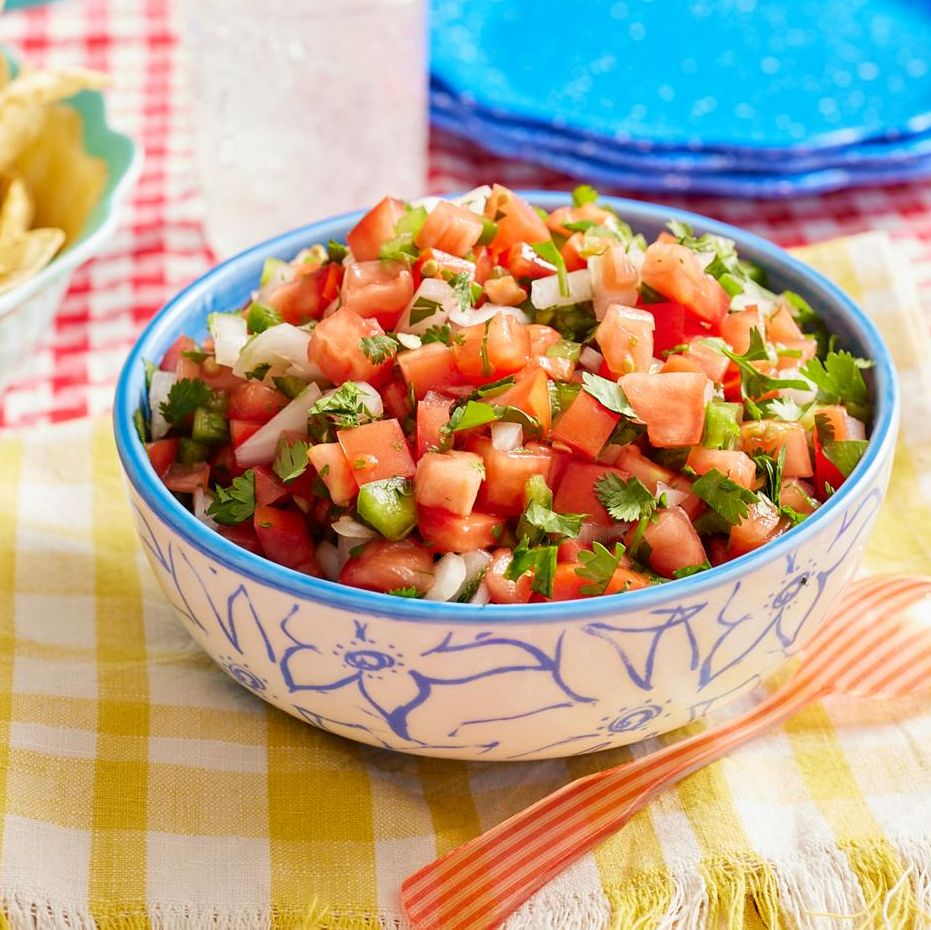

Pico de Gallo Recipe

DESCRIPTION
This classic Pico de Gallo recipe comes together in minutes and is so fresh and healthy. It’s the perfect boost of flavor and color topped on so many dishes!
For ingredients, you'll need:
- 5 plum tomatoes
- 3 jalapenos
- Juice of 1 large lime
- 3/4 teaspoon of salt
- Cilantro
- 1 small red onion
INSTRUCTIONS
- Chop jalapeños, tomatoes, and onions into a very small dice. (Leave seeds in your jalapeños for a hotter pico).
- Chop up a nice-sized bunch of cilantro. Just remove and discard the long leafless stems before chopping. No need to remove the leaves from the stems completely. Place all of these ingredients together in a bowl and give it a good stir.
- Squeeze the juice of one lime into the bowl. Add salt to taste and stir again.